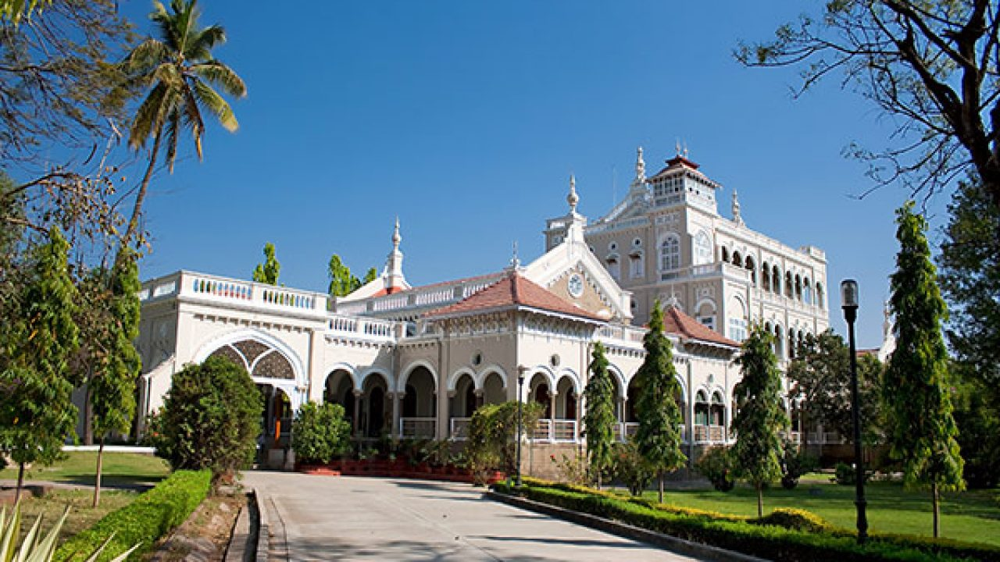
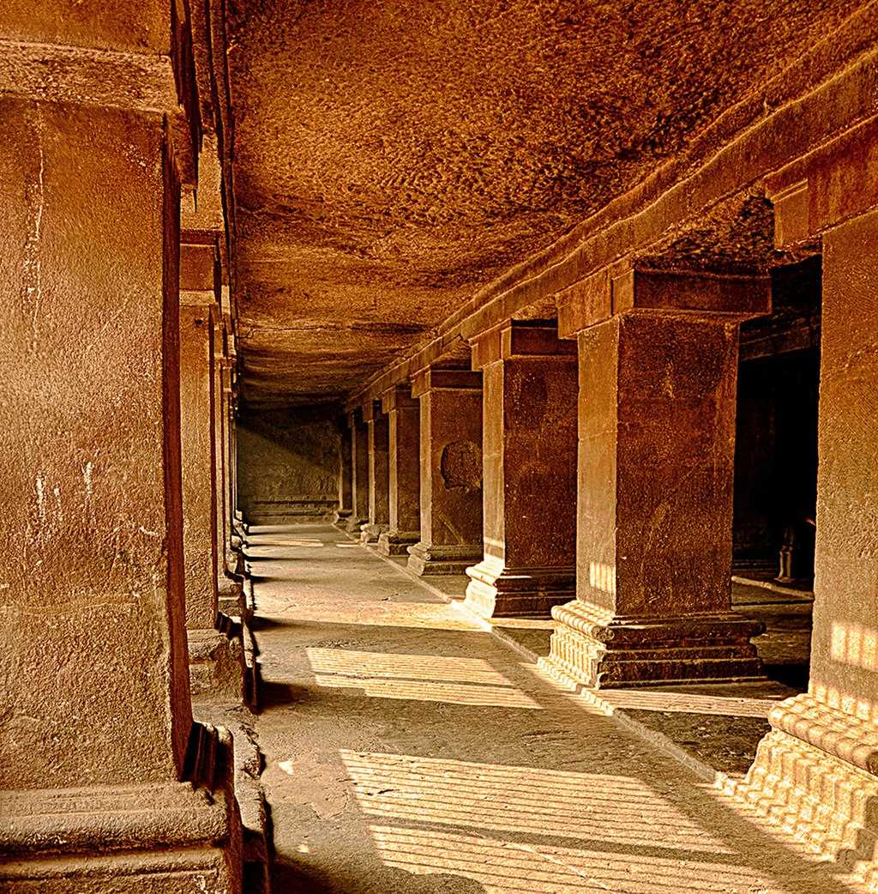

Heritage places in Pune
The historical places in Pune are a great tribute to the grandeur of the Maratha rulers and ancient Indians who lived here. One can learn a lot about the history and culture of ancient India by observing these monuments, such as the famous Aga Khan Palace, or the many historical places such as Shaniwar Wada and Lal Mahal.
- Lal Mahal-located near Shaniwar Wada in Pune is a historic landmark of the 16th century. Subject to innumerable attacks and initial revival, the palace has significant stories to tell.
- Aga Khan Palace-is well known both for its architectural excellence as well as a significant historical place in Pune. Spread over a vast land of 19 acres, the palace is now the headquarters of the Gandhi National memorial society. Here, making khadi is still one of the prime activities.
- Pataleshwar Cave Temple-cave temple is rock-cut temple dating back to the 8th century. Dedicated to Shiva, the temple has a Shivalingam, a circular Nandi Mandapa and a passage with stone pillars inside.
Lal Mahal
.jpg)
Aga Khan Palace

Pataleshwar Cave
